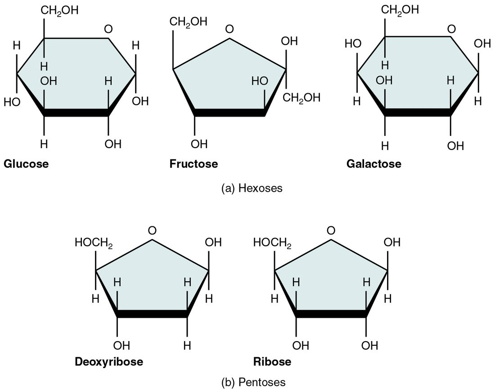
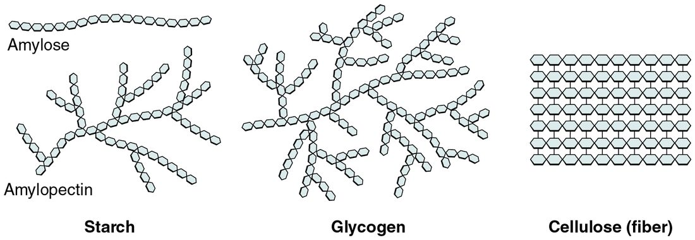
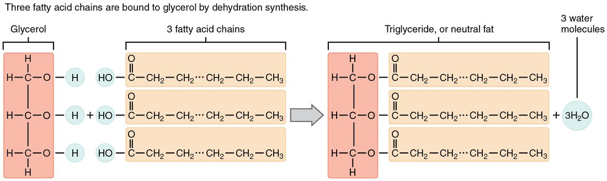
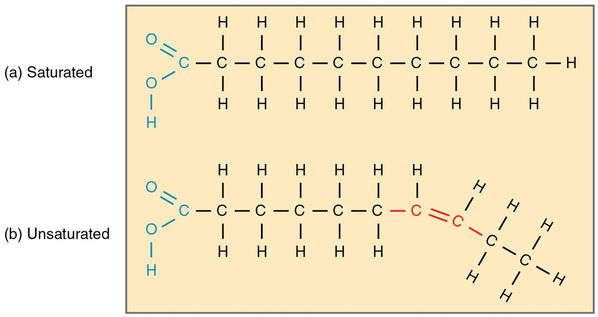
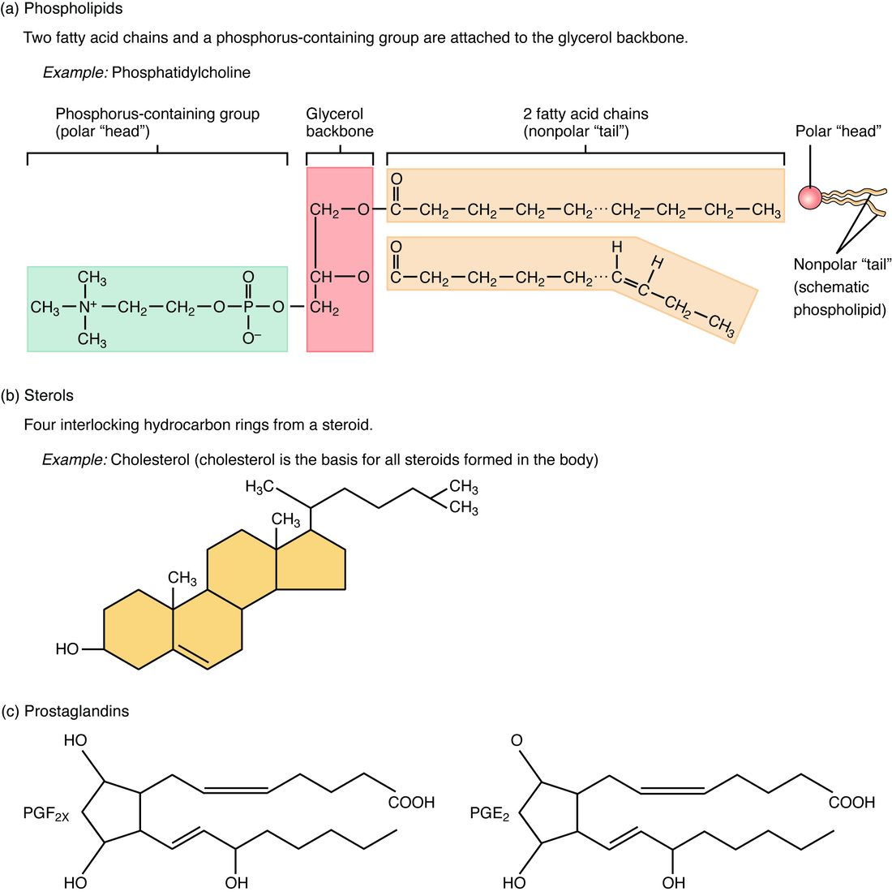
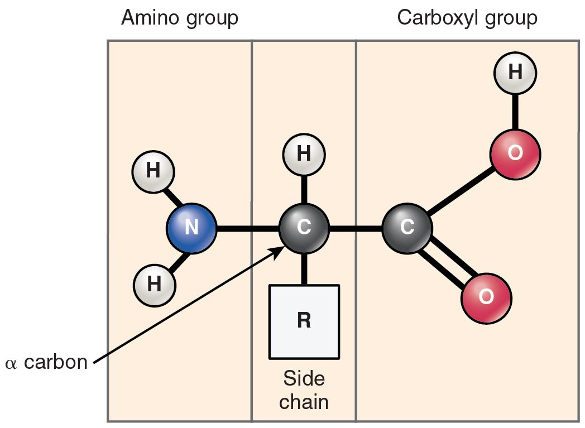
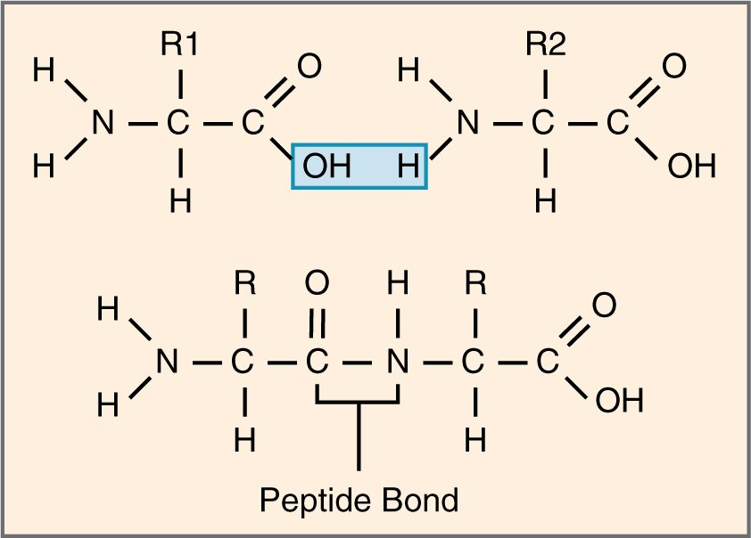
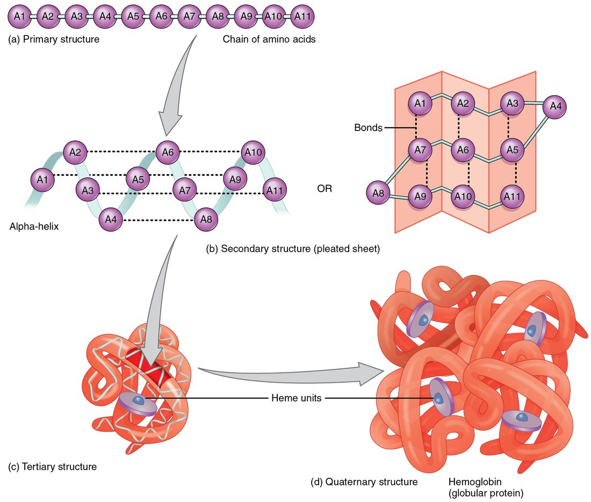
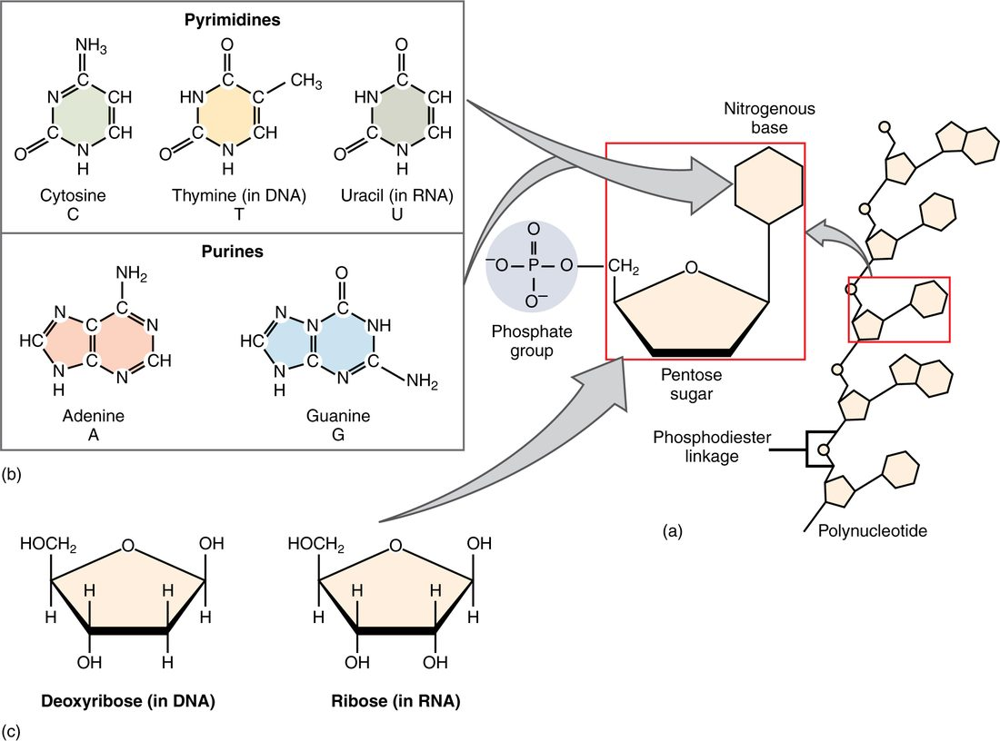
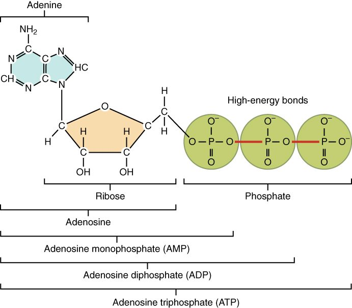

Nearly everything in a cell that is not water or an ion is one of four kinds of large molecule: carbohydrates, lipids, proteins and nucleic acids. This page explains these biological macromolecules for anatomy and physiology: how cells build them from small units and split them again, what each kind is made of, and how each one's structure sets what it can do. It ends with ATP, the small molecule that powers cell work.
Monomers, polymers and macromolecules
A freight train is built by coupling identical cars. Many of your body's large molecules are built the same way. The small repeating unit is a monomer (mono- = one, -mer = part). A chain of many monomers covalently bonded together is a polymer (poly- = many). A very large molecule, whether a polymer or not, is a macromolecule (macro- = large).
Cells join and separate monomers with two opposite reactions (Figure 1):
- Dehydration synthesis (de- = remove, hydr- = water; synthesis = putting together) joins two monomers. One monomer gives up a hydrogen atom, the other gives up an –OH group, and those three atoms leave together as a water molecule. A new covalent bond links the two monomers.
- Hydrolysis (hydro- = water, -lysis = splitting) is the reverse. A water molecule is added across the bond between two monomers: its H goes to one side and its –OH to the other, and the bond breaks.

Digesting a meal is mostly hydrolysis: large molecules in food are split into monomers small enough to absorb. Building your own large molecules from those monomers is mostly dehydration synthesis.
Carbohydrates
Bread, rice, fruit and milk all contain carbohydrates. A carbohydrate (carbo- = carbon, hydrate = water) contains carbon, hydrogen and oxygen, usually in a ratio close to one carbon to two hydrogens to one oxygen, as if carbon were combined with water. Carbohydrates are studded with polar –OH groups, so the small ones are hydrophilic and dissolve easily.
- A monosaccharide (mono- = one, sacchar- = sugar) is a single sugar unit, the monomer of carbohydrates (Figure 2). Glucose, fructose (fruit sugar) and galactose each have six carbons. Ribose and deoxyribose each have five; you will meet them again in nucleic acids.
- A disaccharide (di- = two) is two monosaccharides joined by dehydration synthesis. Sucrose, table sugar, is glucose plus fructose. Lactose, the sugar in milk, is glucose plus galactose. Maltose is two glucose units.
- A polysaccharide (poly- = many) is a long chain of monosaccharides. Starch is the chain plants use to store glucose; it is most of the carbohydrate in bread, rice and potatoes. Glycogen is the chain your own cells use. Cellulose, the fiber in plant cell walls, is also a glucose chain, but its units are linked in a way your digestive system cannot split, so it passes through undigested.

Most of the time "sugar" in physiology means a monosaccharide or disaccharide.
Glucose: your cells' main fuel
Glucose (glyk- = sweet), C6H12O6, is the monosaccharide your blood carries to every cell. Because it is hydrophilic, it dissolves directly in the liquid part of your blood. Most of your cells can break it down for energy, and under ordinary conditions your brain depends on it almost entirely.
Starch and the disaccharides in food are hydrolyzed to monosaccharides before they are absorbed, and much of what arrives in the blood is glucose. After 8 hours without food, a normal glucose level in your blood is about 70 to 99 mg/dL. Below about 70 mg/dL, people begin to feel shaky, sweaty and confused, because the brain's fuel supply is falling. Glucose gel works within minutes in that situation because it is already a monosaccharide: it needs no splitting before it is absorbed.
Glycogen: stored glucose
After a meal, your liver and muscle cells take up glucose and link thousands of units into glycogen by dehydration synthesis (Figure 3). Glycogen is heavily branched. Every branch ends in a glucose unit that can be clipped off, so a cell with many branch ends can release glucose from many points at once, and quickly.

The two stores behave differently:
- Liver glycogen, roughly 100 g, is broken down between meals and overnight, and the liver releases the glucose into your blood. That keeps the glucose level in your blood within its normal range while you are not eating.
- Muscle glycogen, roughly 400 g in total, fuels the muscle that stores it. Muscle cells lack the final step needed to release free glucose into the blood, so their glycogen cannot directly raise the glucose level in your blood.
Lipids
Pour olive oil into water and it floats in a separate layer. A lipid (lip- = fat) is a molecule made mostly of carbon and hydrogen, with few oxygen atoms. That makes lipids mostly nonpolar and hydrophobic: they do not dissolve in water. A substance that dissolves in lipids instead is called lipid soluble. Lipids are not polymers of one repeating monomer. They are grouped together because they share this behavior in water. Three kinds matter most: triglycerides, phospholipids and steroids.
Triglycerides and fatty acids
The fat you eat and the fat you store are mostly triglycerides. A triglyceride (tri- = three) is one glycerol molecule joined to three fatty acids by dehydration synthesis, releasing three water molecules (Figure 4). A fatty acid is a long chain of carbon and hydrogen, usually 12 to 20 carbons, with a carboxyl group at one end.

Why is butter solid at room temperature while olive oil pours? The answer is in the chains (Figure 5).
- In a saturated fatty acid, every carbon in the chain is joined to its neighbors by single bonds and holds as many hydrogens as it can: it is "saturated" with hydrogen. The chain is straight, so chains pack tightly together. Fats rich in saturated fatty acids, mostly from animals, are solid at room temperature.
- In an unsaturated fatty acid, at least one pair of carbons shares a double bond, so those carbons hold fewer hydrogens. In natural fats, each double bond puts a bend in the chain. Bent chains cannot pack tightly, so fats rich in unsaturated fatty acids, mostly from plants and fish, are liquid oils. One double bond makes a chain monounsaturated; two or more make it polyunsaturated.

Triglycerides are your largest energy store. Gram for gram they hold more than twice the energy of carbohydrate or protein, about 9 kcal per gram against about 4, because they are packed with carbon–hydrogen bonds. They are also stored with almost no water, while glycogen holds several times its own weight in water, so as stored tissue fat's advantage is larger still. Stored in fat cells under the skin and around organs, they also insulate and cushion.
Phospholipids: molecules with two personalities
A phospholipid looks like a triglyceride with one fatty acid swapped out. Glycerol carries two fatty acids and, in the third position, a phosphate group linked to a small charged or polar group (Figure 6). That gives the molecule two very different ends:
- a head, charged and polar, which is hydrophilic;
- two tails, the fatty acid chains, which are nonpolar and hydrophobic.
A molecule with one hydrophilic part and one hydrophobic part is amphipathic (amphi- = both, -pathic = feeling). Drop phospholipids into water and they arrange themselves: water molecules bond with each other and with the heads, and squeeze the tails together. The stable result is a two-layer sheet with the heads on both outer faces, touching water, and the tails tucked inside, away from water. That sheet is the basic structure of the boundary around every cell, which the cells topics build on.

Steroids and cholesterol
A steroid is a lipid built on four fused carbon rings, rather than on long chains. The best known is cholesterol (Figure 6). Cholesterol sits among the phospholipids in the boundary around each cell and adjusts how stiff that sheet is. It is also the raw material your body uses to build other steroids, including several molecules that cells release to act on distant cells, which you will meet in later chapters. Your body makes most of its cholesterol, and nearly every cell can make some; the rest comes from animal foods.
Proteins and amino acids
The fibers that make your tissues tough, the carrier that holds oxygen in your blood cells, the molecules that let muscle shorten and the molecules that speed your chemical reactions are all proteins. A protein (prote- = first, primary) is a polymer of amino acids.
Every amino acid has the same core (Figure 7): a central carbon bonded to a hydrogen atom, an amino group (–NH2), a carboxyl group (–COOH) and a side chain, written R. Your proteins use 20 kinds of amino acid, and they differ only in their side chains. Some side chains are nonpolar, some are polar and some carry a charge.

Amino acids link by dehydration synthesis. The carboxyl group of one joins the amino group of the next, releasing water, and the covalent bond that forms is a peptide bond (Figure 8). A chain of many amino acids is a polypeptide. A protein is one or more polypeptides folded into a working shape, usually hundreds of amino acids long.

Twenty kinds of unit, in any order, in chains of hundreds: the number of possible sequences is effectively unlimited. That is why proteins can do so many different jobs.
Protein shape: four levels
A polypeptide does nothing until it folds. Its shape builds up in four levels (Figure 9):
- Primary structure: the sequence of amino acids, held by peptide bonds. The sequence decides every level above it.
- Secondary structure: short stretches coil into an alpha helix or lie side by side in a beta pleated sheet. Hydrogen bonds between atoms of the chain's backbone hold these shapes.
- Tertiary structure: the whole chain folds into a compact three-dimensional shape as its side chains interact. Nonpolar side chains cluster in the middle, away from water; polar and charged side chains face outward. Hydrogen bonds and ionic bonds between side chains hold the fold, and disulfide bonds, covalent bonds between the sulfur atoms of two cysteine side chains, lock parts of it in place.
- Quaternary structure: some proteins are two or more folded polypeptides fitted together. The oxygen carrier in your blood cells, for example, is four chains working as a unit.

Shape determines function. A protein works by fitting other molecules, the way a key fits a lock, so anything that changes its shape changes what it can do. In one inherited blood disorder, a single amino acid swap in the oxygen carrier puts a nonpolar side chain on the outside of the protein, and the molecules stick together into long, stiff strands that bend the cell out of shape.
Denaturation
Crack an egg into a hot pan. The clear egg white turns solid and white, and it never turns clear again. Its proteins have unfolded and tangled together. Loss of a protein's shape is denaturation (de- = remove, nature = its natural form).
Denaturation breaks the weak attractions that hold the secondary, tertiary and quaternary structure, mainly hydrogen bonds and ionic bonds. The peptide bonds are left alone, so the amino acid sequence stays the same. What changes is the shape, and with it the function. Denaturing agents include:
- heat, which shakes molecules hard enough to break hydrogen bonds. A core body temperature above about 41 °C begins to unfold some of your proteins, one reason extreme overheating damages organs;
- a change in the concentration of hydrogen ions, which adds or removes H+ on charged side chains and so breaks the ionic bonds between them;
- some chemicals, such as alcohol and heavy metals.
Mild denaturation can sometimes reverse when conditions return to normal. Severe denaturation, like the cooked egg, usually cannot.
Nucleic acids and nucleotides
Your cells store and use hereditary instructions in nucleic acids. A nucleic acid (nucle- = kernel, first found in the cell nucleus) is a polymer of nucleotides. Each nucleotide has three parts (Figure 10):
- a phosphate group;
- a five-carbon sugar, ribose or deoxyribose;
- a nitrogenous base, a ring-shaped molecule containing nitrogen.

There are five bases, in two families. The purines, adenine (A) and guanine (G), have two rings. The pyrimidines, cytosine (C), thymine (T) and uracil (U), have one ring. Nucleotides link by dehydration synthesis into a strand whose backbone alternates sugar, phosphate, sugar, phosphate, with a base sticking out from each sugar. The order of the bases along the strand carries the information.
There are two nucleic acids:
| Deoxyribonucleic acid | Ribonucleic acid | |
|---|---|---|
| Sugar | Deoxyribose | Ribose |
| Bases | A, G, C and T | A, G, C and U |
| Strands | Two, held together by hydrogen bonds between facing bases | Usually one |
| Job | Stores the hereditary instructions, including the amino acid sequence of every protein | Carries out those instructions to build proteins |
The cells chapter shows how the base sequence of deoxyribonucleic acid becomes the amino acid sequence of a protein.
ATP: the nucleotide that powers cell work
A muscle shortening, a cell pumping ions across its boundary and a cell building a protein all need energy, and in each case most of that energy comes from the same molecule. ATP, adenosine triphosphate, is a nucleotide: the base adenine, the sugar ribose and a chain of three phosphate groups (Figure 11).

Cells split off the outer phosphate by hydrolysis. That leaves ADP, adenosine diphosphate (di- = two), plus a free phosphate, and it releases energy the cell uses for work:
ATP + water → ADP + phosphate + energy for cell work
Cells then rebuild ATP from ADP and phosphate, using energy released as they break down fuel molecules such as glucose and fatty acids. The cycle runs constantly: your body holds only a few tens of grams of ATP at any moment, yet it rebuilds roughly its own body weight of ATP every day.
The four classes compared
| Carbohydrates | Lipids | Proteins | Nucleic acids | |
|---|---|---|---|---|
| Elements | C, H, O | C, H, O (phospholipids add P, and often N) | C, H, O, N (some S) | C, H, O, N, P |
| Building block | Monosaccharide | No single monomer; triglycerides are glycerol plus fatty acids | Amino acid | Nucleotide |
| Bond joining the units | Covalent bond formed by dehydration synthesis | Covalent bond formed by dehydration synthesis | Peptide bond, formed by dehydration synthesis | Covalent sugar–phosphate bond, formed by dehydration synthesis |
| Behavior in water | Small ones hydrophilic | Hydrophobic (phospholipids amphipathic) | Depends on side chains | Hydrophilic backbone |
| Main jobs | Quick fuel (glucose); short-term store (glycogen) | Long-term energy store; cell boundaries; raw material for messengers | Structure, movement, transport, speeding reactions, signaling, defense | Storing and using hereditary instructions. Single nucleotides do other jobs: ATP powers cell work |
| Example | Glucose, glycogen | Triglyceride, cholesterol | The oxygen carrier in blood cells | Deoxyribonucleic acid; the single nucleotide ATP |